I bought Joy a Canon Rebel 2000 for Christmas, 2001 and the camera shop threw in a Canon Snappy LXII free (a $59.95 value). Naturally, she uses the Rebel all the time and the Snappy sat in a drawer. Rather then let it gather dust, I decided to take it to work and record some of the amazing sunsets I see almost everyday.
The Snappy is extremely simple—no zoom, no auto-focus, no tiny buttons—just a big dial to choose one of: red-eye reduction/auto-flash, flash on, flash off, timer, and, of course, off. One problem with the unified control, however is that you are stuck with the modes Canon picked. It would be nice to have a timer mode that didn't use the flash, for instance. On the other hand, since the dial is on the front of the camera, it should be easy to trouble-shoot problems when you hand the camera to a stranger to take your picture.
The viewfinder is large, clear and centered over the lens, which is clearly a major selling point. You can get a good idea of what will be in the picture even when holding the camera at arms length. (This was helpful when I leaned across my desk to put the camera right against my window.) Holding the Snappy reminds me of Joy's Rebel in part because of a ridge on the right-hand side that sort of simulates the grip of a SLR camera. The lens is also shifted a bit to the left-hand side, so I don't cover it with my finger when I hold the camera naturally.
In keeping with the theme of simplicity, ordinary AA batteries are used to power the camera, meaning you can get replacements anywhere on earth and use rechargeables. (Be careful, though. Rechargeable batteries slowly loose charge over the course of a month or two.) Film loading is a snap (ha ha). There's a mid-role rewind feature, but I don't think I'll ever use it. The frame counter is (how shall I put this?) less useful than it could be. It's a little dial with approximate positions marked ("S", "1", "4", "8", and so on) that gets rotated every time the film is advanced. If you want to know exactly which frame you are on, you'd best keep careful notes of the pictures you've shot.
Unlike most cameras, the Snappy is fixed-focus. Only one plane of the photograph is perfectly sharp, and every other point is to some degree blurry. I used these calculators to guess that the Snappy is focused at about 9 feet. For brightly lit situations, the blur is not too bad, but it is very noticeable in low-light pictures. That's because the camera's auto-exposure system opens the lens as wide as possible (increases the aperture) to capture as much light as it can. For this camera, that's f/4.5 or about 7.8mm. The wider the aperture, the smaller the depth of field, and the more blurry objects that are too close or too far from the ideal focus point.
Canon lists the focus range as "1.5 m/4.9 ft. to infinity". I found this in the Prima BF-8 specifications. It's the same camera—it just has a different name outside the US. I love the comment on the Intro page: "Taking photographs are more exciting and less burdening now, thanks to Canon Prima BF-8. Its compact size makes it easier to keep as it does not take up too much of storage."
35mm is right at the boundary of being considered a wide-angle lens, which makes it useful inside and for land and cityscapes. It's a good size for the sunsets I was trying to capture because you get quite a bit of sky in the frame.
Basically the Snappy LXII is a step above a disposable camera and a step below an autofocus point-and-shoot. This genre of cameras seems to be marketed toward children, but it can be useful for anyone who wants a cheap, simple camera. In the right conditions (bright sunlight or close flash photography), there's no reason you won't get good looking pictures.
| Frame # | Date | Time | Subject |
|---|---|---|---|
| 1 | Feb. 6, 2003 | ~5:15pm | Sunset |
| 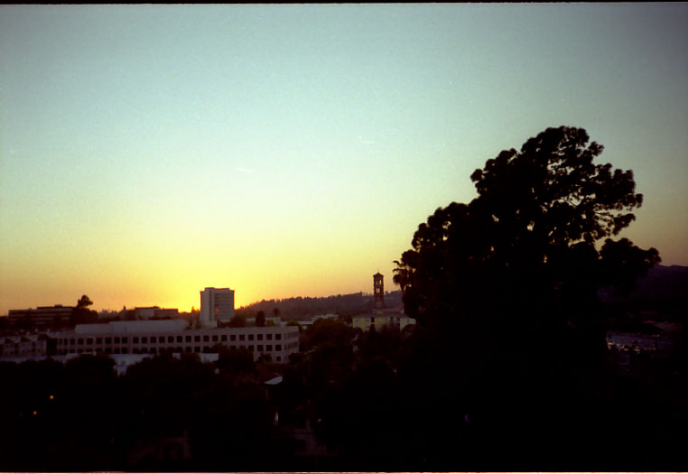 | |||
| 2 | Feb. 6, 2003 | 5:19pm | Sunset |
| 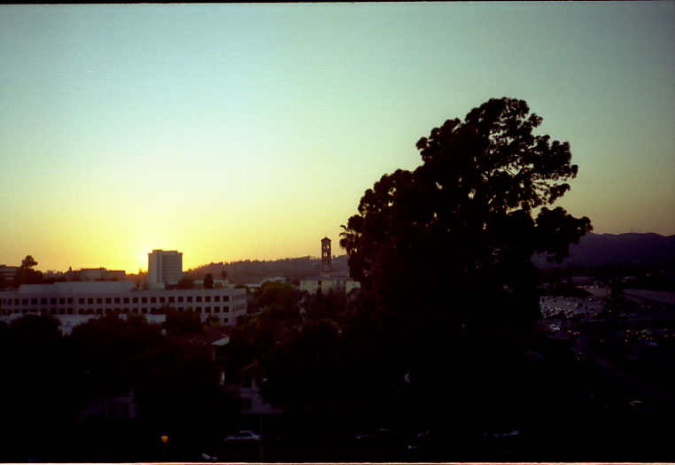 | |||
| 3 | Feb. 7, 2003 | 5:23pm | Sunset |
| 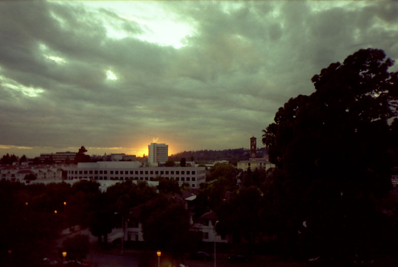 | |||
| 4 | Feb. 7, 2003 | 6:11pm | My cubicle |
| 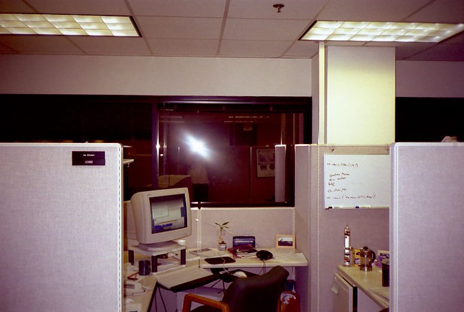 | |||
| 5 | Feb. 10, 2003 | 5:31pm | Sunset |
| Underexposed—No image | |||
| 6 | Feb. 10, 2003 | 6:37pm | Lit-up buildings |
| Underexposed—No image | |||
| 7 | Feb. 11, 2003 | 4:23pm | Clouds |
| 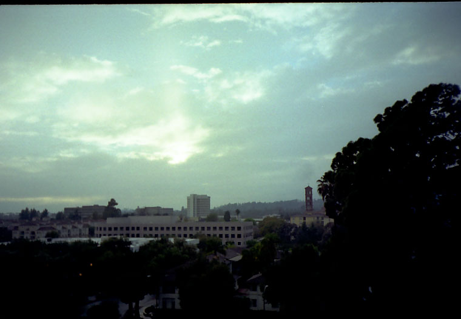 | |||
| 8 | Feb. 11, 2003 | 5:01pm | Sunset |
| 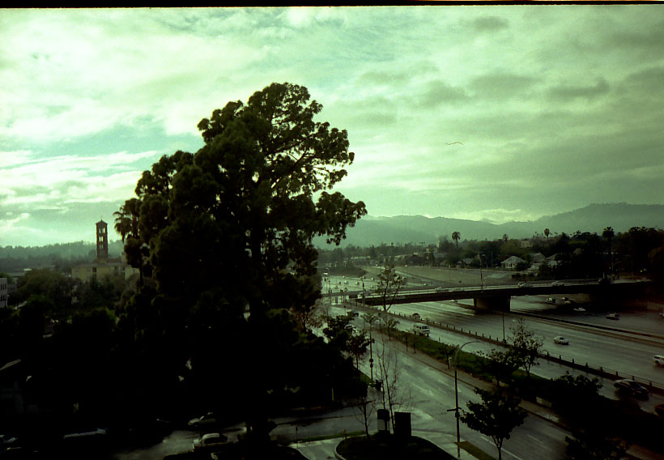 | |||
| 9 | Feb. 11, 2003 | 5:15pm | Euclid Building |
| 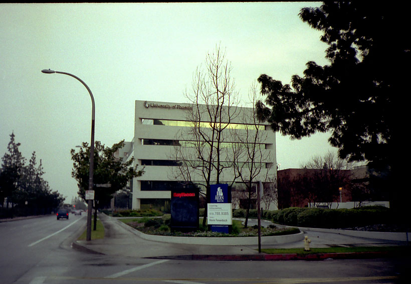 | |||
| 10 | Feb. 12, 2003 | 5:00pm | Rainy day |
| Underexposed—No image | |||
| 11 | Feb. 13, 2003 | 9:16am | Rainy day |
| 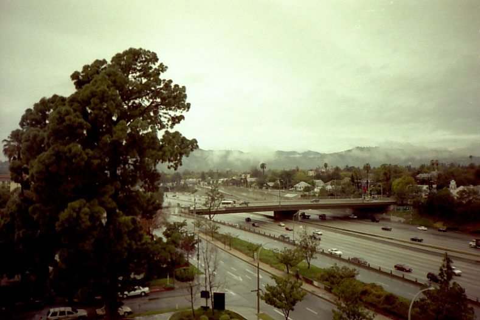 | |||
| 12 | Feb. 13, 2003 | 9:24am | Rainy day |
| 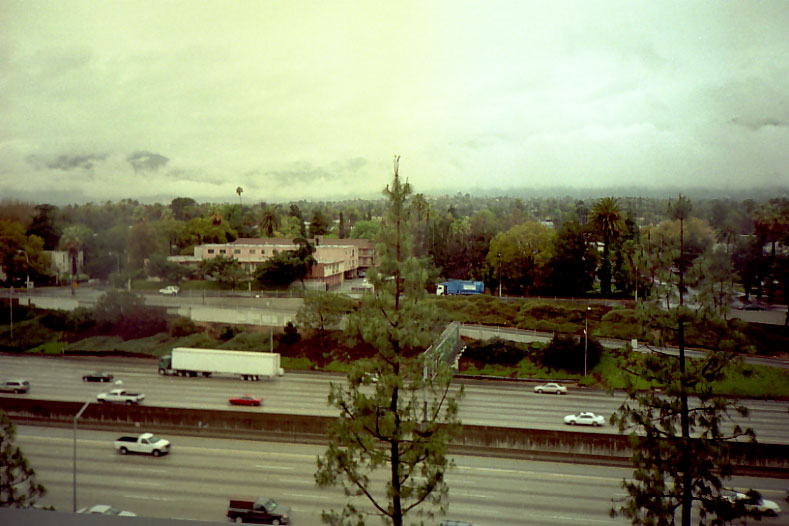 | |||
| 13 | Feb. 13, 2003 | 9:24am | Rainy day |
| 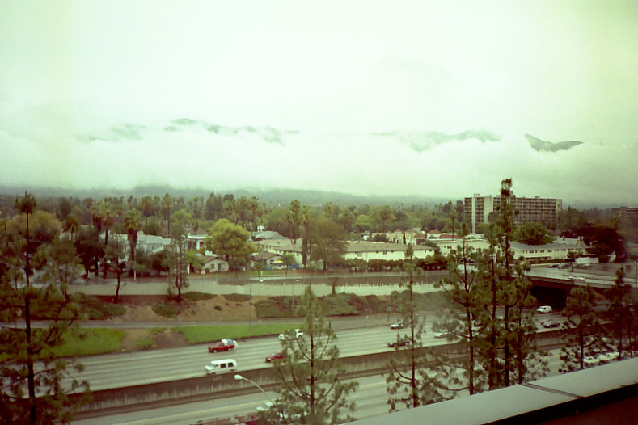 | |||
| 14 | Feb. 13, 2003 | 5:15pm | Sunset |
| 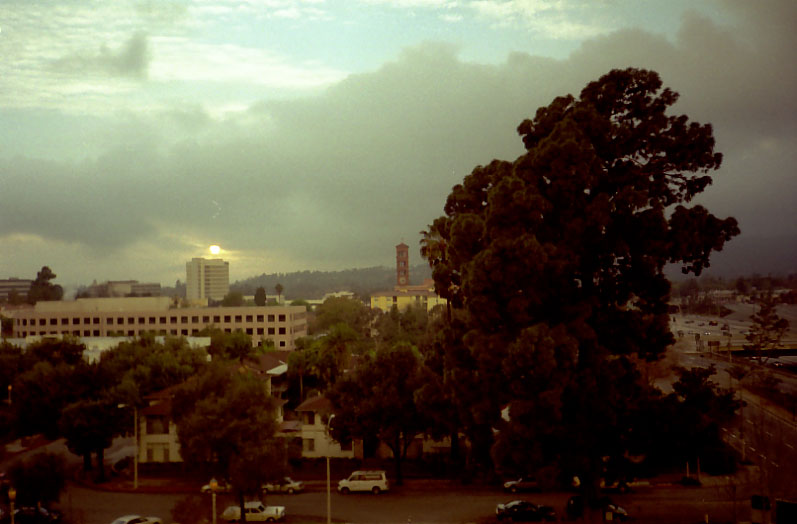 | |||
| 15 | Feb. 13, 2003 | 5:40pm | Sunset |
| 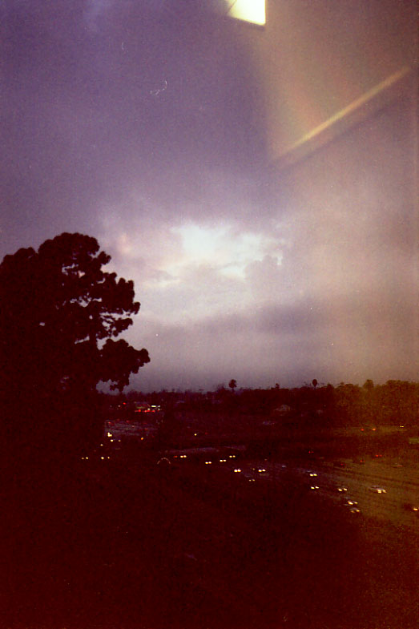 | |||
| 16 | Feb. 15, 2003 | ~12pm | Joy taking a flower picture at the San Diego Wild Animal Park |
| 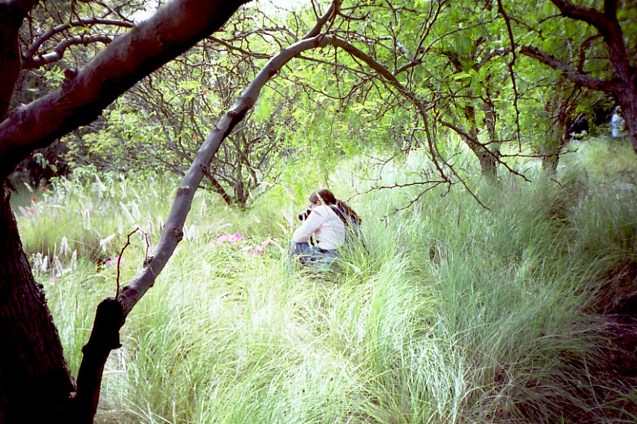 | |||
| 17 | Feb. 18, 2003 | 5:26pm | Sunset |
| 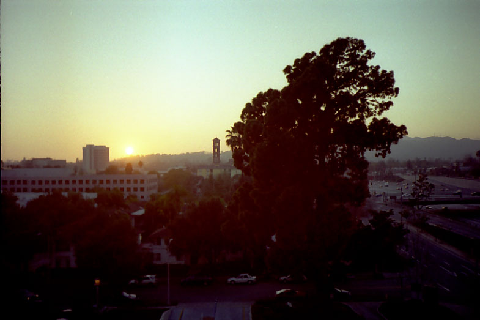 | |||
| 18 | Feb. 19, 2003 | 3:17pm | Pasadena City Library |
| 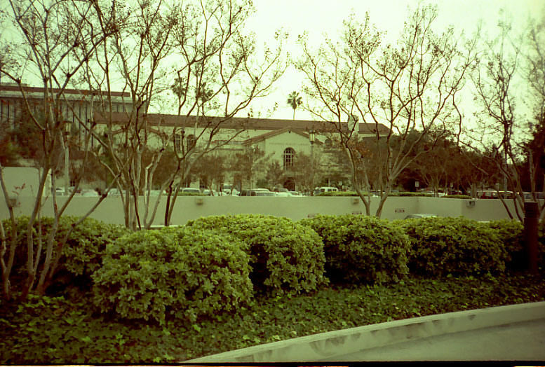 | |||
| 19 | Feb. 19, 2003 | 4:48pm | Clouds |
| 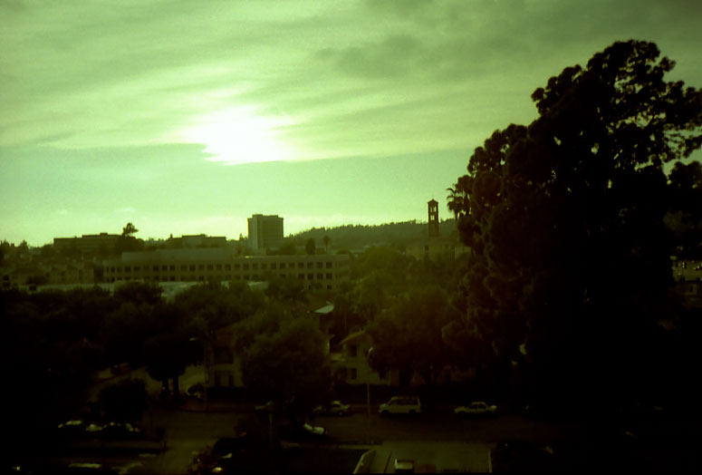 | |||
| 20 | Feb. 19, 2003 | 5:18pm | Sunset |
| 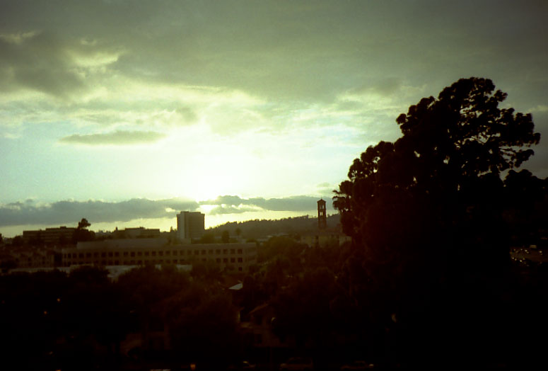 | |||
| 21 | Feb. 19, 2003 | 5:19pm | Sunset |
| 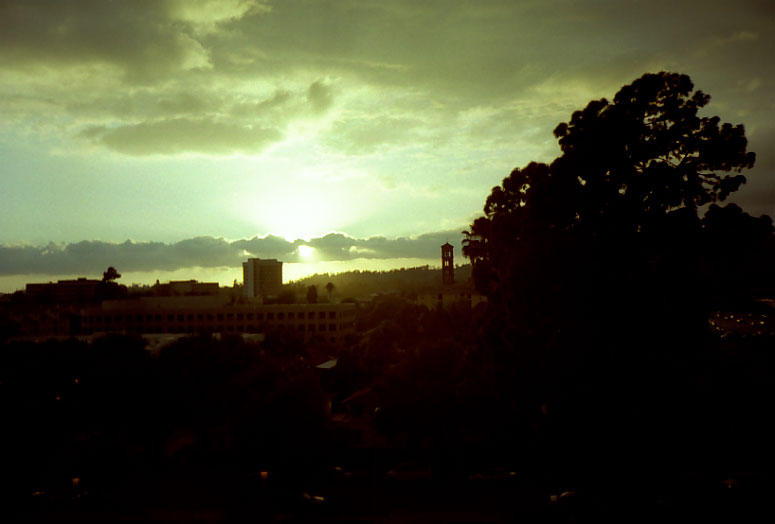 | |||
| 22 | Feb. 19, 2003 | 5:20pm | Sunset |
| 23 | Feb. 19, 2003 | 5:30pm | Sunset |
| 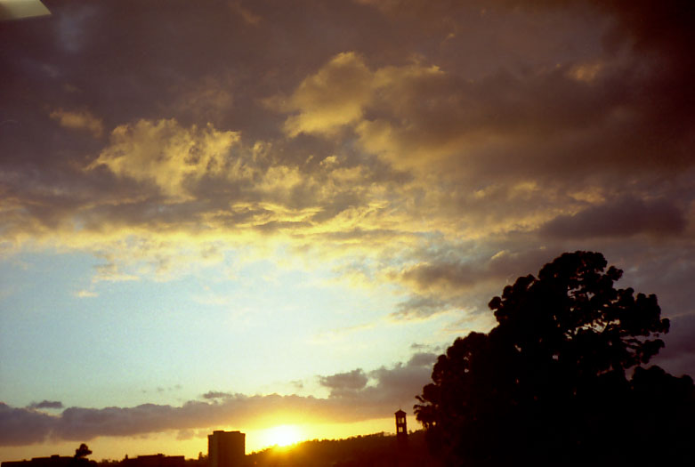 | |||
| 24 | Feb. 19, 2003 | 5:33pm | Sunset |
| 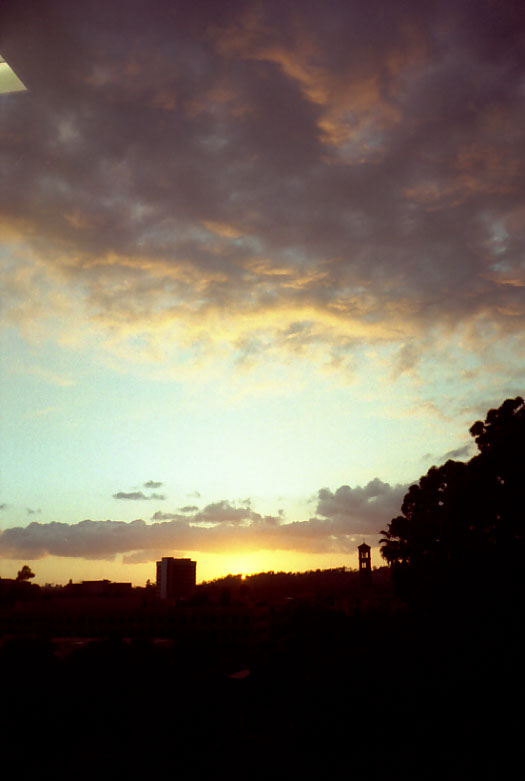 | |||
| 25 | Feb. 19, 2003 | 5:34pm | Sunset |
| 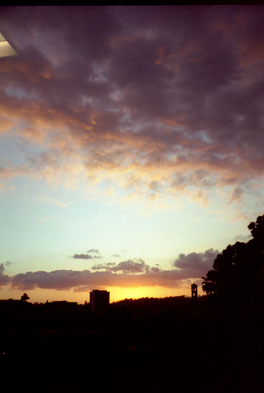 | |||
| 26 | Feb. 20, 2003 | 5:33pm | Sunset |
| 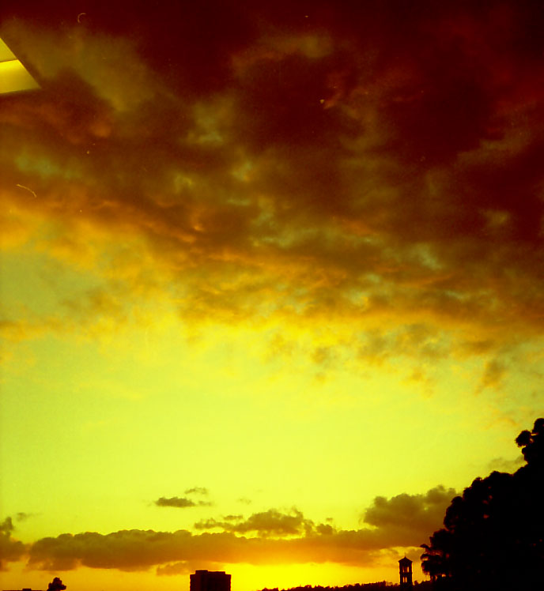 | |||
| Frame # | Date | Time | Subject |
|---|---|---|---|
| 1 | March 1, 2003 | ~10am | Joy taking a picture of a purple plum blossom at Descanso Gardens |
| Not yet developed | |||
| 2 | March 3, 2003 | 2:30pm | Hawk being attacked by ravens. |
| Not yet developed | |||
| 3 | March 3, 2003 | ~3pm | Alley between my building and the apartments next to it |
| Not yet developed | |||
| 4 | March 3, 2003 | ~3pm | Backyard of apartments next to my building |
| Not yet developed | |||
| 5 | March 5, 2003 | ~11:45am | Saturn ION blimp |
| Not yet developed | |||
| 6 | March 5, 2003 | ~5:15pm | Pasadena City Hall |
| Not yet developed | |||
| 7 | March 13, 2003 | 5:43pm | Sunset |
| Not yet developed | |||
| 8 | March 29, 2003 | ~1pm | Our yard sale |
| Not yet developed | |||
| 9 | April 4, 2003 | 6:06pm | Sunset |
| Not yet developed | |||
| 10 | April ??, 2003 | 5:00pm | ? |
| Not yet developed | |||
| 11 | April ??, 2003 | 9:16am | ? |
| Not yet developed | |||
| 12 | April ??, 2003 | 9:24am | ? |
| Not yet developed | |||
| 13 | April ??, 2003 | 9:24am | ? |
| Not yet developed | |||
| 14 | April ??, 2003 | 5:15pm | ? |
| Not yet developed | |||
| 15 | April ??, 2003 | 5:40pm | ? |
| Not yet developed | |||
| 16 | April ??, 2003 | ~12pm | ? |
| Not yet developed | |||
| 17 | April ??, 2003 | 5:26pm | ? |
| Not yet developed | |||
| 18 | April ??, 2003 | 3:17pm | ? |
| Not yet developed | |||
| 19 | April ??, 2003 | 4:48pm | ? |
| Not yet developed | |||
| 20 | April ??, 2003 | 5:18pm | ? |
| Not yet developed | |||
| 21 | April ??, 2003 | 5:19pm | ? |
| Not yet developed | |||
| 22 | April ??, 2003 | 5:20pm | ? |
| Not yet developed | |||
| 23 | April ??, 2003 | 5:30pm | ? |
| Not yet developed | |||
| 24 | April ??, 2003 | 5:33pm | ? |
| Not yet developed | |||
| 25 | April ??, 2003 | 5:34pm | ? |
| Not yet developed | |||
| 26 | April ??, 2003 | 5:33pm | ? |
| Not yet developed | |||